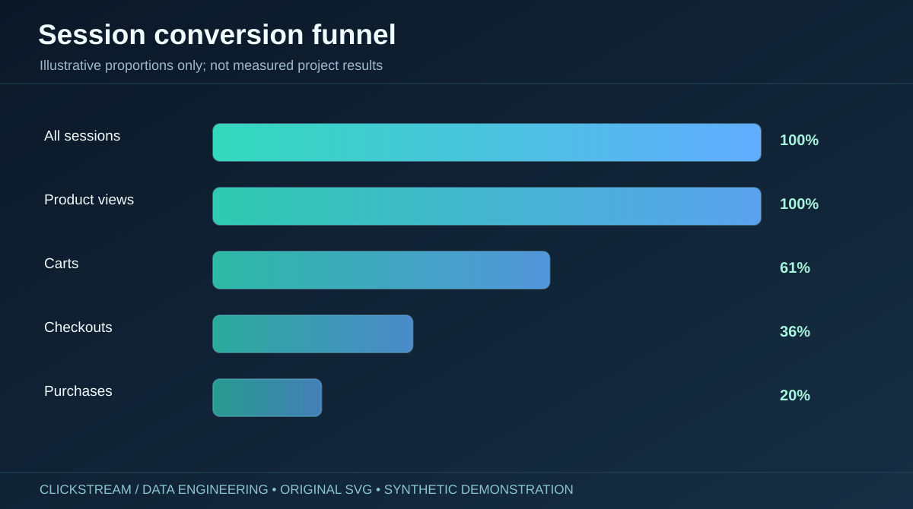
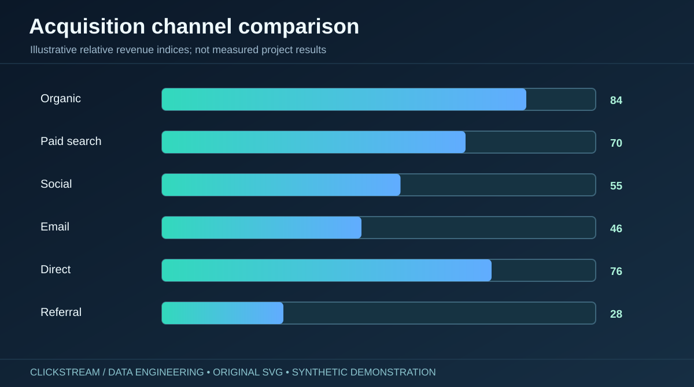
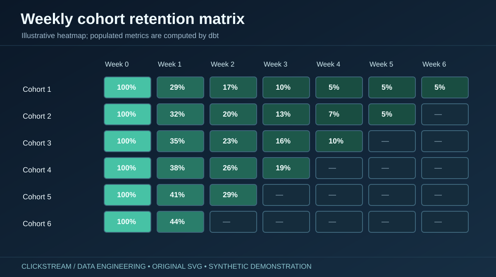
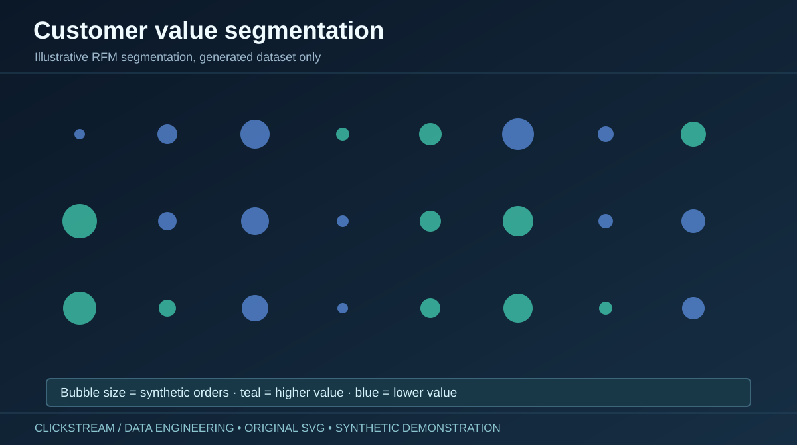
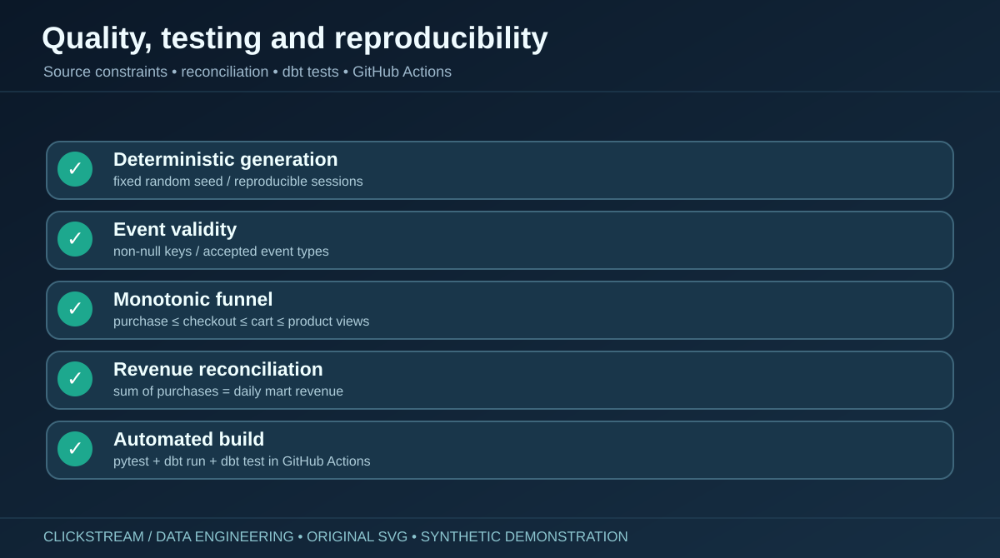

Clickstream Intelligence.
From individual events to explainable conversion funnels, acquisition channel performance, weekly retention cohorts and customer value.

Audit-ready analytical warehouse.
The project generates deterministic synthetic sessions, loads a DuckDB raw zone, builds typed dbt staging and session models, and publishes business-facing marts for reporting. A local Streamlit application queries computed mart tables.
Clicks and customers have different grains.
Raw event counts cannot replace unique sessions. This portfolio project defines a purchase session once, reconciles its revenue, and explicitly distinguishes weekly activity retention from purchase retention.


Generate → validate → model → visualize.
Seeded Python clickstream generation → CSV ingestion → DuckDB raw schema → dbt staging → unique-session model → daily/channel/customer/retention/product marts → Python tests, SQL assertions and executive dashboard.

Conversion, cohorts and customer intelligence.
Window-function examples, rolling KPIs, cohort time offsets, channel rankings and RFM-style segmentation explain the transformations. The images below illustrate business questions; the source's local Streamlit interface displays data actually computed from the generated warehouse.





Reproducible build and verified automated tests.
The GitHub Actions workflow successfully built the synthetic warehouse, ran dbt models and contract tests, and produced synthetic aggregate dashboard data. Tests include deterministic generation, event uniqueness, funnel ordering, revenue checks and ingestion repeatability.

A verified local demo, not a live company warehouse.
No actual customer records, observed business conversion outcomes, public Streamlit hosting, external cloud warehouse, real-time ingestion, scale/load benchmark or production security claim. Future production work would need source agreements, identity/consent rules, operational monitoring and capacity evaluation.